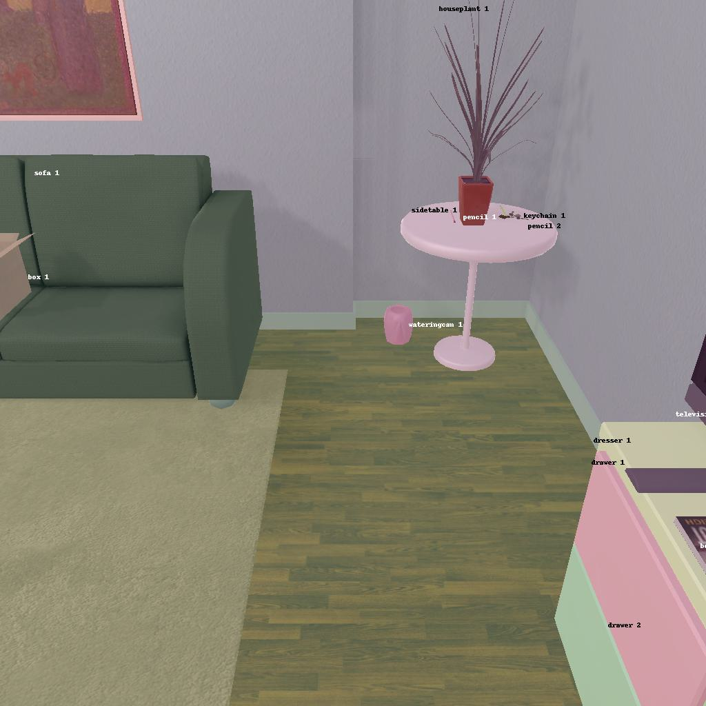
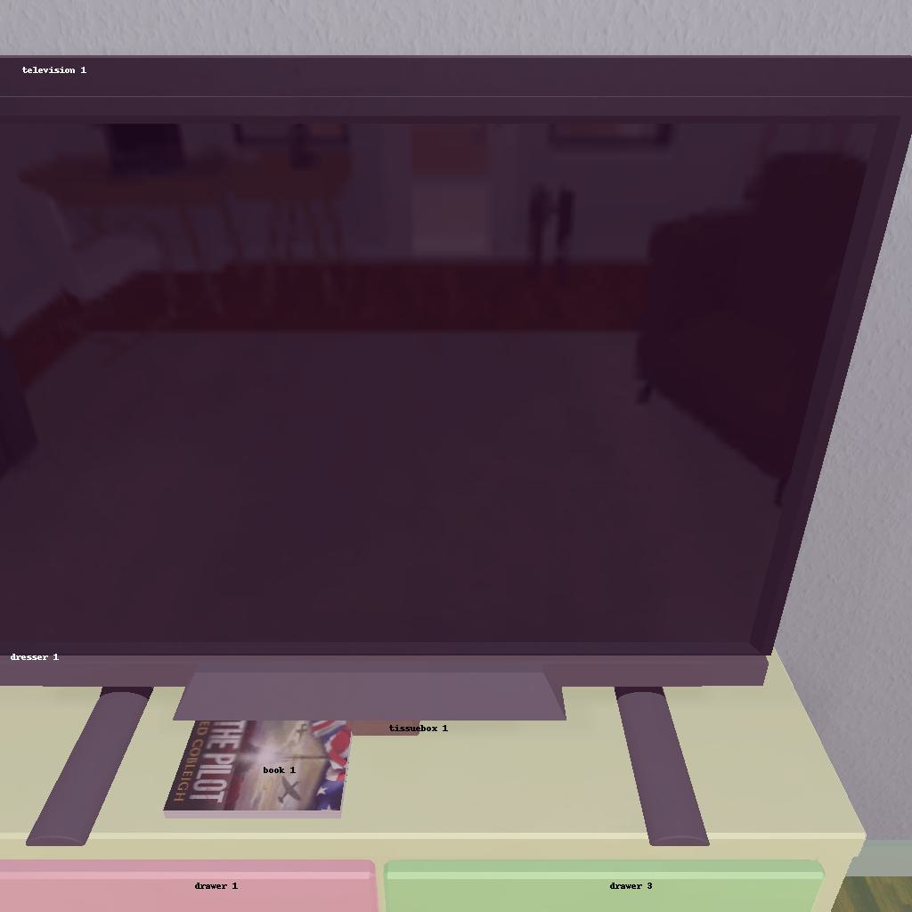

---------------------------------------------------------task: 5---------------------------------------------------------
--------------------------------------------------------------------------------------------------------------------------------------------------------------------
--------------------------------------------------------------------------------------------------------------------------------------------------------------------
Step:--------------------------------------------------------------------------2-------------------------------------------------------------------------------
----------------------------------------
VLM Prompt:
Image1:
Image2:
**Instruction**
1. Analyze the provided image to identify all visible household objects, focusing on those relevant to the task description "put some book on armchair."
2. Use the analysis of the image and the task hint "The agent must find an object of the desired type, pick it up, find the correct location to place it, and put it down there." to answer the question: what is the most reasonable action in the choices for the task description "put some book on armchair"?
4. Decide and write the answer using the template: The answer is: (i): , where i is the real number. If there is no desired object in the image, search every place based on **Initial Observation** to find the object. And if no one is exactly correct, choose a similar answer.
**Initial Observation**
You are in the middle of a room. Looking quickly around you, you can see armchair (1), sofa (1), coffeetable (1), drawer (1-4), sidetable (1-3), dresser (1)
**Answer Choices**
(1): go to armchair 1
(2): go to sofa 1
(3): go to coffeetable 1
(4): go to sidetable 1
(5): go to drawer 2
(6): go to drawer 3
(7): go to drawer 4
(8): go to sidetable 2
(9): go to sidetable 3
(10): take television 1 from dresser 1
(11): take book 1 from dresser 1
(12): take tissuebox 1 from dresser 1
(13): examine dresser 1
**Answer**
Let's think step by step by following the instructions.
----------------------------------------
----------------------------------------
Original Response:
First, we need to identify if there is a book visible in the images provided. In Image 1, there are no books visible. However, in Image 2, we can see "book 1" on top of "dresser 1." Since our task is to "put some book on armchair," we need to pick up a book.
The task hint guides us to find an object of the desired type (which is a book in this case), pick it up, find the correct location to place it (which is the armchair), and put it down there. Therefore, the most reasonable action from the choices provided would be to go to the location of the book and pick it up.
Based on the initial observation, the book is on the dresser, not in the drawers, sidetables, or on the sofa, coffeetable, or television, so we can eliminate those options. The correct action to take would be to go to "dresser 1" and take "book 1" from there.
The answer is: (11): take book 1 from dresser 1.
----------------------------------------
----------------------------------------
>>> Refine Original VLM Response and Get Pure Action: take book 1 from dresser 1
----------------------------------------
-----------------------------------------------------------------
Running time: 16.284843683242798 seconds
Total Money: 1.9911800000000002
-----------------------------------------------------------------
-----------------------------------------------------------------
Text Observation:You pick up the book 1 from the dresser 1.
-----------------------------------------------------------------
UNSUCCEED